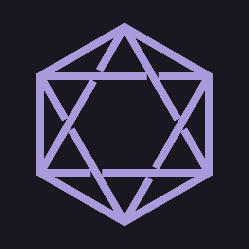
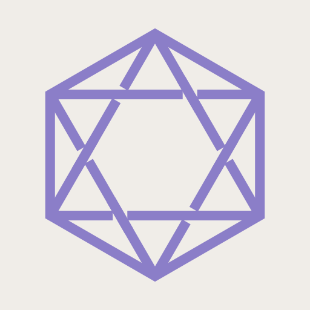
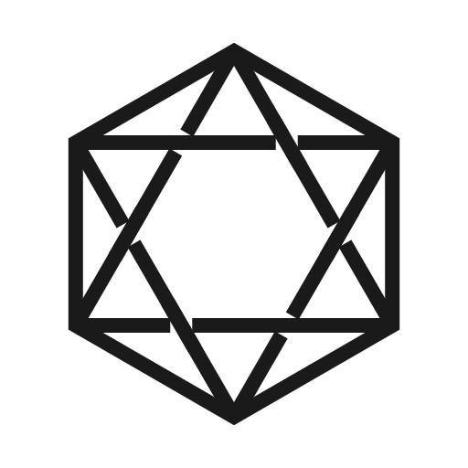

Sovren Software — Brand Kit
v3 — hexagonal knot mark · violet atmosphere · peak state · warm text
// 01. The Mark
Hexagonal Knot — regular hexagon (pointy-top) with interwoven hexagram. Celtic knot weave at 6 crossings.
Stroke weight: 16/512 viewBox (~4% of hex diameter). Scalable from 16px favicon to print.

ON DARK
#A99ADB on #1A1721 (violet-black)

ON LIGHT
#8B7EC8 on #F0EDE8 (warm bone)

MONO WHITE
#FFFFFF — dark contexts

MONO DARK
#1A1A1A — light contexts
// 02. Scale Test
// 03. Nav Integration
Esver
Visage
MrHaven
Codex
SYS:DARK
SOVREN
Esver
Visage
MrHaven
Codex
SYS:LIGHT
// 04. Color System
Light mode: warmth connects surface to accent (parchment + violet = the Captain's desk).
Dark mode: the accent hue IS the substrate (violet-black = inside the machine).
Light — The Captain's Desk
accent-surface
violet/0.08
Dark — Inside the Machine
accent-surface
violet/0.08
// 05. Emotional Arc
Three accent levels: environment (borders, labels) → accent (active states) → peak (CTA, awakening).
Environment
// SPECIFICATIONS
rgba(accent, 0.12)
Accent
Esver OS
#A99ADB / #8B7EC8
Peak
AWAKEN YOURS.
#B8ABE6 / #9D8FD6
Environment
// SPECIFICATIONS
rgba(black, 0.12)
Peak
AWAKEN YOURS.
#9D8FD6
// 06. Peak State — CTA Buttons
Awaken yours
PEAK FILLED on bone
Awaken yours
PEAK GHOST on bone
Learn more
STANDARD ACCENT on bone
Awaken yours
PEAK FILLED on violet-black
Awaken yours
PEAK GHOST on violet-black
Learn more
STANDARD ACCENT on violet-black
// 07. Construction Reference
Mark: Hexagonal Knot — regular hexagon (pointy-top, R=200) + hexagram with Celtic weave
Stroke: 16/512 viewBox = ~4% of hex diameter. Matches original concept image proportions.
Weave: Gap 24 units (16/sin60° + margin). Each edge OVER at t=1/3, UNDER at t=2/3.
Inner void: Circumradius R/√3 ≈ 0.577R, rotated 30° from outer hex (flat-top).
Favicon: Simplified (no weave), heavier relative strokes for 16-32px legibility.
Peak accent: Reserved for CTA buttons, boot text, awakening moments. Max 1 per viewport.
Dark bg: #1A1721 (HSL 260° 18% 11%) — violet at minimum intensity, not brown-black.
Dark text: #EAE7E3 — warm off-white, carries bone warmth into dark mode.
Dark borders: rgba(169,154,219, 0.12) — violet-tinted, not neutral white/0.12.
Typeface: Geist Mono Variable (self-hosted). One typeface. No exceptions.
Symbol reads as: Sovereignty (six-fold symmetry) · interconnection (interlocking bands) · integrity (inner void)